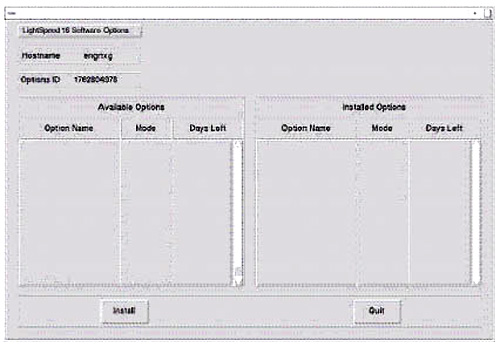
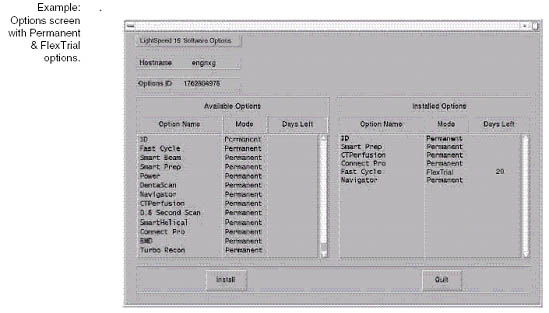

Operating Documentation
Direction 5134894-800, Rev# 9
GOC4 Upgrade Installation & Service Information
Operating Documentation |
| Required Persons | Preliminary Reqs | Procedure | Finalization |
|---|---|---|---|
| 1 | 4 hours | 10 mins |
Computer Integration Procedure is as follows:
(For Systems Requiring a LFC, i.e. 2.X (LS Plus Upgrades)) Configuration
(For Systems NOT Requiring a LFC, i.e. 1.X (QX/i)) Reconfiguration
| Last Revised: | 22 September 2008 |
| Condition | Reference | Eff |
|---|---|---|
Follow the steps listed in Before You Begin | - | - |
Before you begin this procedure, do the following:
Locate all information forms and sheets.
Locate all software and Software Load Procedures for your upgrade.
Check all cable connections in Console and PDU.
Power-ON systems. Your system should boot to applications.
Check software version loaded.
Record any errors.
If your system fails to boot, follow the appropriate Troubleshooting procedure.
Note: Type the text shown in boldface, and press the <Enter> on the keyboard.
| NOTE: | For sites that have System State Information ONLY on a MOD (not a DVD). |
Open a Unix shell and type the following:
From browser, type: cat /usr/g/config/INFO<Enter>
(For QX/i (1.X) Upgrade) Continue with this procedure.
(For Plus (2.X) Upgrade) Proceed to LFC Procedure - Version 05MW14.5.
whoami<Enter>
ctuser
cd /usr/g/bin<Enter>
sysstategui -MOD -IRX2LNX<Enter>
When the system state GUI comes up, Select [ALL] and then select [RESTORE] .
| NOTE: | The Irix to Linux conversion takes around 40 minutes. The command lines scroll very quickly during the conversion. When the scrolling stops, the system state has completed its conversion. |
(For All Non-Linux Upgrades Only) With the system state MOD still in the drive, open a new shell type the following commands as ctuser:
mountMOD -I2L<Enter>
mv /usr/g/service/.bb /usr/g/service/bb.lfc<Enter>
mkdir /usr/g/service/.bb<Enter>
rm -rf /tmp/*bb<Enter>
cp /MOD/service_mod_data/system_state/*bb /usr/g/service/.bb<Enter>
/usr/g/bin/SwapTubeData<Enter>
cp -f /tmp/*bb /usr/g/service/.bb<Enter>
Remove the MOD from the drive.
Insert the DVD into the Peripheral Tower DVD RAM tower drive.
Select: [SERVICE DESKTOP] .
Select: [UTILITIES] .
Select: [SYSTEM STATE] .
Click [ALL] to select all the cals, characterizations, etc.
Click [SAVE] .
If applicable, click [OK] when the following message appears: System State Media Status: Please insert a DVD or MOD into the drive and press Save again.
When completed select [DISMISS] .
Close the window in the upper left corner of the screen.
Use the system state disk DVD that you just created for the installed system. The system state disk you created should contain:
Collimator Characterization
Phantom Calibrations
Gen Cal
Other Data
The installation process uses all the system state files. At this time, use the system state DVD to restore all files.
If the system state DVD was not created, you must recalibrate your system.
Insert the System State DVD you just created into the DVD drive in the SCSI Tower.
If you are not on the Service Desktop, click on the [SERVICE DESKTOP] icon  .
.
Click on the [PM] icon .
Select [SYSTEM STATE] .
Select [CHARACT] .
Select [CALS] .
Select [RESTORE ALL] to restore the system characterization and phantom calibration files to the system.
| NOTE: | Restore All State can take as long as ten minutes, although
typical times average about three minutes. When Restore State completes,
dismiss the tool, and proceed to the next section. If any error should occur during the restore process, see the Software Installation Procedures manual (Load From Cold) for information regarding possible error messages and their recovery. |
Click [NO] for Reset Scan Hardware popup message.
Select [DISMISS] .
Check all restored items against your data sheets. Fix any failed items.
Use this procedure when upgrading from the Linux GOC II Console to the GRE Console.
| NOTE: | This is not applicable for an Octane Console to GRE Console upgrade. |
Save State via the System State UI.
Do not remove the system state media (DVD) from the drive after the save operation.
Open a shell and type the following:
tar Pcvf /data/vxtlBackup.tar /usr/g/ctuser/Prefs/VoxtoolPrefs/* mountDVD
\cp -f /data/vxtlBackup.tar /DVD/service_mod_data/system_state unmountDVD
Close the shell and continue with the software load.
Restore State via the System State UI.
Verify that the CSA Protocols (Reformat, Volume Viewer, etc.) are restored correctly.
| NOTE: | Your system may have media containing customer purchased
options. If your system has an options disk, install it at this time
- otherwise skip this section. (Click on the PDF icon below for a listing of standard options.)
Ensure that the options disk (DVD) is NOT write protected at this time. The initial install requires that the DVD be write enabled; subsequent installs can be done with the DVD write protected. |
Insert the Options DVD in the Peripheral Tower DVD RAM drive.
If you are not on the Service Desktop, click on the [SERVICE DESKTOP] icon, .
Click on the [UTILITIES] icon, .
Select [INSTALL] .
Select [INSTALL OPTIONS] . A blank Software Options screen ( Illustration 1) appears.
Illustration 1: Install Options Screen

Click [INSTALL] . A Select Mechanism ( Illustration 2) window opens. Select the mechanism through which you want to install Option Keys.
Illustration 2: Select Mechanism window
Click [PERMANENT] . A Select Device ( Illustration 3) window opens. Select the mechanism through which you want to install the Permanent Option Keys.
Illustration 3: Select Device Window
Click the [MEDIA] button and insert the Options DVD or MOD.
Click [OK] . Available options appear on the Software Options screen ( Illustration 4).
Illustration 4: Software Options Screen

Pick options one at a time from the Available Options list and click on [INSTALL] to update each selection and place it on the Installed Options List.
When the process is complete, click [QUIT] to close the window.
Reconfiguration procedures are system-specific. Please select the appropriate system from the following list:
| NOTE: | The following three tasks must be done for ALL systems. |
Install all camera, network, and DICOM devices.
Complete all network transfers for each device.
Complete all film transfers for each device.
Save State.